1. Pick categories
2. Shuffle a mixed set
🔒 For Mom
The original pack, exactly as printed
Every page from the original PDF, unchanged. Tick each activity when finished, or print one page at a time.
Cover & contents
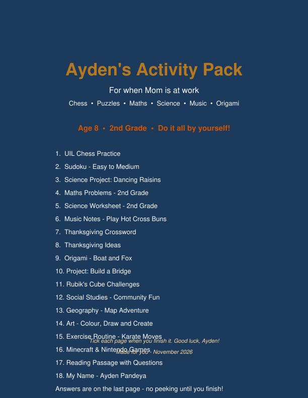
Show the text of this page
Ayden's Activity Pack For when Mom is at work Chess • Puzzles • Maths • Science • Music • Origami Age 8 • 2nd Grade • Do it all by yourself! 1. UIL Chess Practice 2. Sudoku - Easy to Medium 3. Science Project: Dancing Raisins 4. Maths Problems - 2nd Grade 5. Science Worksheet - 2nd Grade 6. Music Notes - Play Hot Cross Buns 7. Thanksgiving Crossword 8. Thanksgiving Ideas 9. Origami - Boat and Fox 10. Project: Build a Bridge 11. Rubik's Cube Challenges 12. Social Studies - Community Fun 13. Geography - Map Adventure 14. Art - Colour, Draw and Create 15. Exercise Routine - Karate Moves Tick each page when you finish it. Good luck, Ayden! 16. Minecraft & Nintendo MadeGames for you - November 2026 17. Reading Passage with Questions 18. My Name - Ayden Pandeya Answers are on the last page - no peeking until you finish!
1. UIL Chess Practice
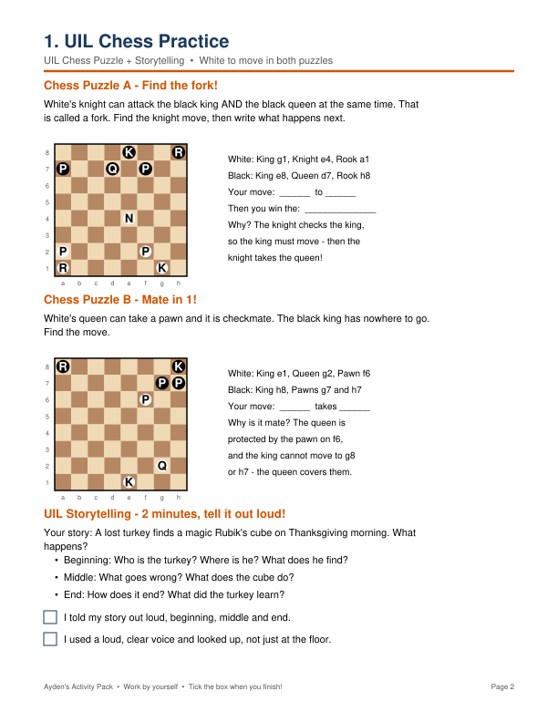
Show the text of this page
1. UIL Chess Practice UIL Chess Puzzle + Storytelling • White to move in both puzzles Chess Puzzle A - Find the fork! White's knight can attack the black king AND the black queen at the same time. That is called a fork. Find the knight move, then write what happens next. K 8 7 P Q R P Black: King e8, Queen d7, Rook h8 6 Your move: ______ to ______ 5 Then you win the: ______________ N 4 Why? The knight checks the king, 3 2 1 White: King g1, Knight e4, Rook a1 so the king must move - then the P R a P knight takes the queen! K b c d e f g h Chess Puzzle B - Mate in 1! White's queen can take a pawn and it is checkmate. The black king has nowhere to go. Find the move. 8 R K P P 7 P 6 White: King e1, Queen g2, Pawn f6 Black: King h8, Pawns g7 and h7 Your move: ______ takes ______ 5 Why is it mate? The queen is 4 protected by the pawn on f6, 3 and the king cannot move to g8 Q 2 or h7 - the queen covers them. K 1 a b c d e f g h UIL Storytelling - 2 minutes, tell it out loud! Your story: A lost turkey finds a magic Rubik's cube on Thanksgiving morning. What happens? • Beginning: Who is the turkey? Where is he? What does he find? • Middle: What goes wrong? What does the cube do? • End: How does it end? What did the turkey learn? I told my story out loud, beginning, middle and end. I used a loud, clear voice and looked up, not just at the floor. Ayden's Activity Pack • Work by yourself • Tick the box when you finish! Page 2
2. Sudoku - Easy to Medium
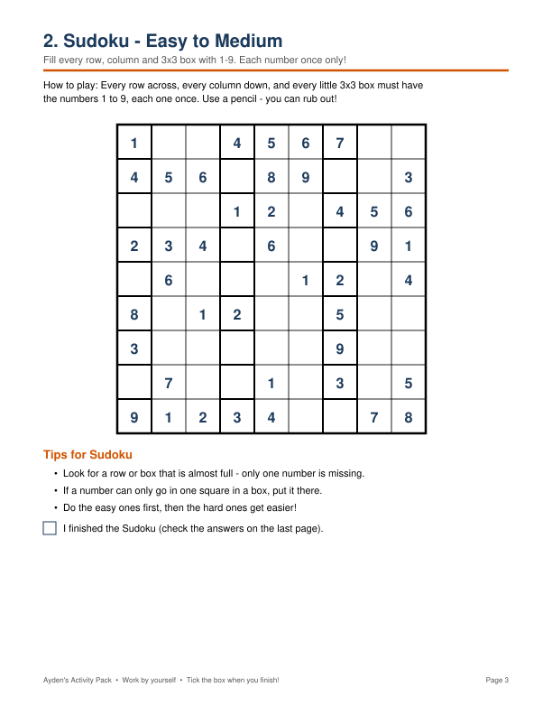
Show the text of this page
2. Sudoku - Easy to Medium Fill every row, column and 3x3 box with 1-9. Each number once only! How to play: Every row across, every column down, and every little 3x3 box must have the numbers 1 to 9, each one once. Use a pencil - you can rub out! 1 4 4 5 6 1 2 3 4 5 6 8 9 2 4 1 1 2 5 6 9 1 2 4 5 3 9 7 9 3 6 6 8 7 1 1 2 3 3 4 5 7 8 Tips for Sudoku • Look for a row or box that is almost full - only one number is missing. • If a number can only go in one square in a box, put it there. • Do the easy ones first, then the hard ones get easier! I finished the Sudoku (check the answers on the last page). Ayden's Activity Pack • Work by yourself • Tick the box when you finish! Page 3
3. Science Project: Dancing Raisins
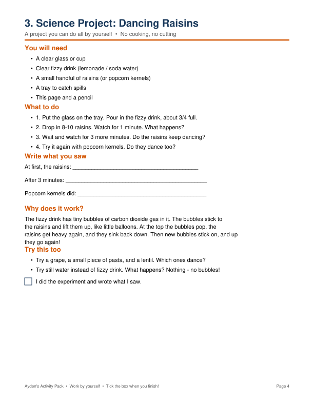
Show the text of this page
3. Science Project: Dancing Raisins A project you can do all by yourself • No cooking, no cutting You will need • A clear glass or cup • Clear fizzy drink (lemonade / soda water) • A small handful of raisins (or popcorn kernels) • A tray to catch spills • This page and a pencil What to do • 1. Put the glass on the tray. Pour in the fizzy drink, about 3/4 full. • 2. Drop in 8-10 raisins. Watch for 1 minute. What happens? • 3. Wait and watch for 3 more minutes. Do the raisins keep dancing? • 4. Try it again with popcorn kernels. Do they dance too? Write what you saw At first, the raisins: ________________________________________ After 3 minutes: _____________________________________________ Popcorn kernels did: _________________________________________ Why does it work? The fizzy drink has tiny bubbles of carbon dioxide gas in it. The bubbles stick to the raisins and lift them up, like little balloons. At the top the bubbles pop, the raisins get heavy again, and they sink back down. Then new bubbles stick on, and up they go again! Try this too • Try a grape, a small piece of pasta, and a lentil. Which ones dance? • Try still water instead of fizzy drink. What happens? Nothing - no bubbles! I did the experiment and wrote what I saw. Ayden's Activity Pack • Work by yourself • Tick the box when you finish! Page 4
4. Maths Problems - 2nd Grade
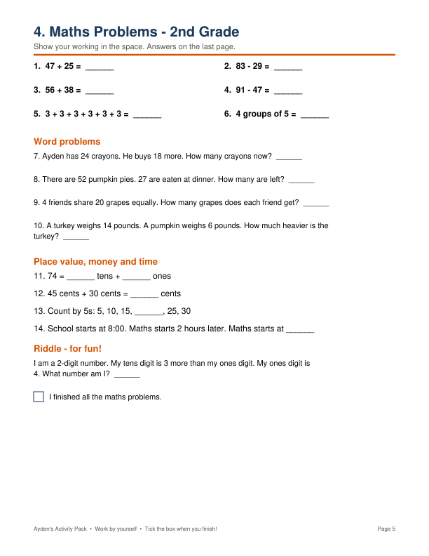
Show the text of this page
4. Maths Problems - 2nd Grade Show your working in the space. Answers on the last page. 1. 47 + 25 = ______ 2. 83 - 29 = ______ 3. 56 + 38 = ______ 4. 91 - 47 = ______ 5. 3 + 3 + 3 + 3 + 3 + 3 = ______ 6. 4 groups of 5 = ______ Word problems 7. Ayden has 24 crayons. He buys 18 more. How many crayons now? ______ 8. There are 52 pumpkin pies. 27 are eaten at dinner. How many are left? ______ 9. 4 friends share 20 grapes equally. How many grapes does each friend get? ______ 10. A turkey weighs 14 pounds. A pumpkin weighs 6 pounds. How much heavier is the turkey? ______ Place value, money and time 11. 74 = ______ tens + ______ ones 12. 45 cents + 30 cents = ______ cents 13. Count by 5s: 5, 10, 15, ______, 25, 30 14. School starts at 8:00. Maths starts 2 hours later. Maths starts at ______ Riddle - for fun! I am a 2-digit number. My tens digit is 3 more than my ones digit. My ones digit is 4. What number am I? ______ I finished all the maths problems. Ayden's Activity Pack • Work by yourself • Tick the box when you finish! Page 5
5. Science - 2nd Grade
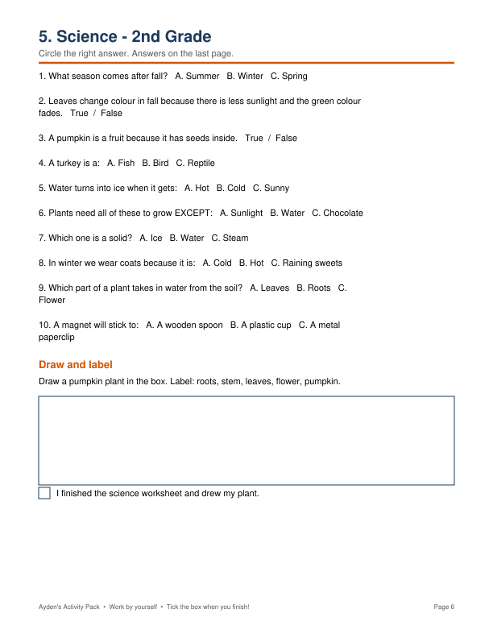
Show the text of this page
5. Science - 2nd Grade Circle the right answer. Answers on the last page. 1. What season comes after fall? A. Summer B. Winter C. Spring 2. Leaves change colour in fall because there is less sunlight and the green colour fades. True / False 3. A pumpkin is a fruit because it has seeds inside. True / False 4. A turkey is a: A. Fish B. Bird C. Reptile 5. Water turns into ice when it gets: A. Hot B. Cold C. Sunny 6. Plants need all of these to grow EXCEPT: A. Sunlight B. Water C. Chocolate 7. Which one is a solid? A. Ice B. Water C. Steam 8. In winter we wear coats because it is: A. Cold B. Hot C. Raining sweets 9. Which part of a plant takes in water from the soil? A. Leaves B. Roots C. Flower 10. A magnet will stick to: A. A wooden spoon B. A plastic cup C. A metal paperclip Draw and label Draw a pumpkin plant in the box. Label: roots, stem, leaves, flower, pumpkin. I finished the science worksheet and drew my plant. Ayden's Activity Pack • Work by yourself • Tick the box when you finish! Page 6
6. Music Notes - Play Hot Cross Buns
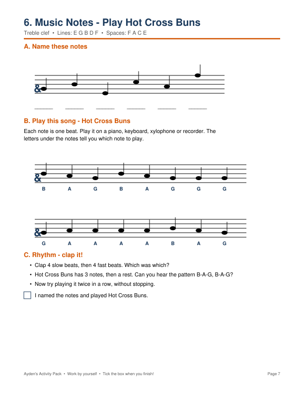
Show the text of this page
6. Music Notes - Play Hot Cross Buns Treble clef • Lines: E G B D F • Spaces: F A C E A. Name these notes & ______ ______ ______ ______ ______ ______ B. Play this song - Hot Cross Buns Each note is one beat. Play it on a piano, keyboard, xylophone or recorder. The letters under the notes tell you which note to play. & B A G B A G G G G A A A A B A G & C. Rhythm - clap it! • Clap 4 slow beats, then 4 fast beats. Which was which? • Hot Cross Buns has 3 notes, then a rest. Can you hear the pattern B-A-G, B-A-G? • Now try playing it twice in a row, without stopping. I named the notes and played Hot Cross Buns. Ayden's Activity Pack • Work by yourself • Tick the box when you finish! Page 7
7. Thanksgiving Crossword
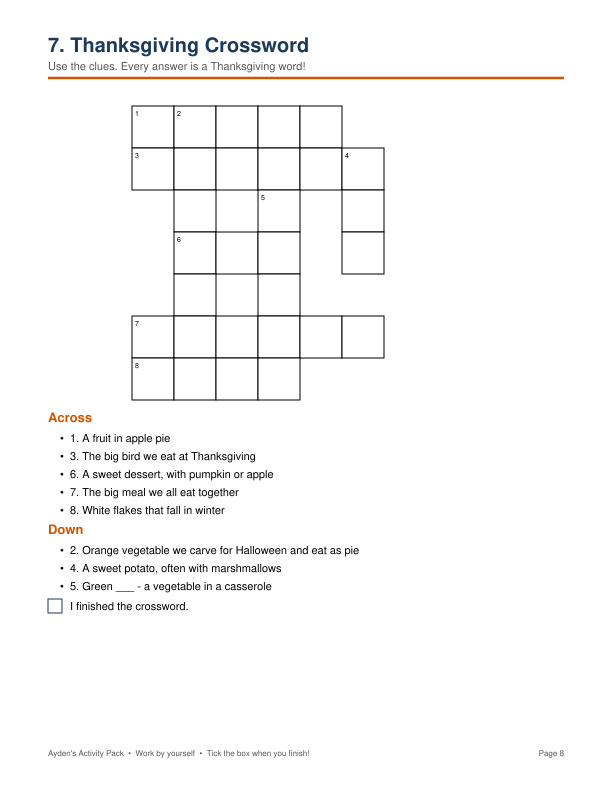
Show the text of this page
7. Thanksgiving Crossword Use the clues. Every answer is a Thanksgiving word! 1 2 3 4 5 6 7 8 Across • 1. A fruit in apple pie • 3. The big bird we eat at Thanksgiving • 6. A sweet dessert, with pumpkin or apple • 7. The big meal we all eat together • 8. White flakes that fall in winter Down • 2. Orange vegetable we carve for Halloween and eat as pie • 4. A sweet potato, often with marshmallows • 5. Green ___ - a vegetable in a casserole I finished the crossword. Ayden's Activity Pack • Work by yourself • Tick the box when you finish! Page 8
8. Thanksgiving Ideas
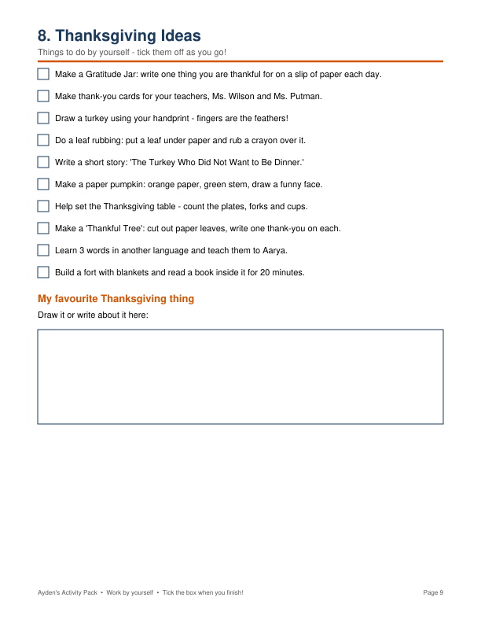
Show the text of this page
8. Thanksgiving Ideas Things to do by yourself - tick them off as you go! Make a Gratitude Jar: write one thing you are thankful for on a slip of paper each day. Make thank-you cards for your teachers, Ms. Wilson and Ms. Putman. Draw a turkey using your handprint - fingers are the feathers! Do a leaf rubbing: put a leaf under paper and rub a crayon over it. Write a short story: 'The Turkey Who Did Not Want to Be Dinner.' Make a paper pumpkin: orange paper, green stem, draw a funny face. Help set the Thanksgiving table - count the plates, forks and cups. Make a 'Thankful Tree': cut out paper leaves, write one thank-you on each. Learn 3 words in another language and teach them to Aarya. Build a fort with blankets and read a book inside it for 20 minutes. My favourite Thanksgiving thing Draw it or write about it here: Ayden's Activity Pack • Work by yourself • Tick the box when you finish! Page 9
9. Origami - Boat and Fox
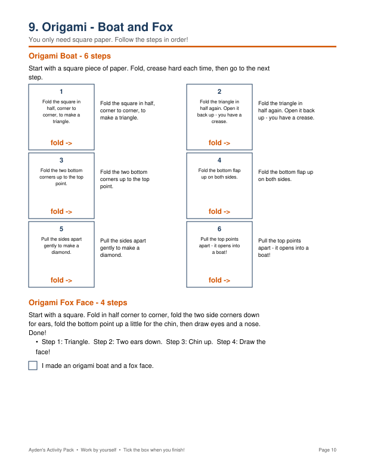
Show the text of this page
9. Origami - Boat and Fox You only need square paper. Follow the steps in order! Origami Boat - 6 steps Start with a square piece of paper. Fold, crease hard each time, then go to the next step. 1 Fold the square in half, corner to corner, to make a triangle. 2 Fold the square in half, corner to corner, to make a triangle. Fold the triangle in half again. Open it back up - you have a crease. fold -> fold -> 3 4 Fold the two bottom corners up to the top point. Fold the two bottom corners up to the top point. Fold the bottom flap up on both sides. fold -> fold -> 5 6 Pull the sides apart gently to make a diamond. Pull the sides apart gently to make a diamond. fold -> Pull the top points apart - it opens into a boat! Fold the triangle in half again. Open it back up - you have a crease. Fold the bottom flap up on both sides. Pull the top points apart - it opens into a boat! fold -> Origami Fox Face - 4 steps Start with a square. Fold in half corner to corner, fold the two side corners down for ears, fold the bottom point up a little for the chin, then draw eyes and a nose. Done! • Step 1: Triangle. Step 2: Two ears down. Step 3: Chin up. Step 4: Draw the face! I made an origami boat and a fox face. Ayden's Activity Pack • Work by yourself • Tick the box when you finish! Page 10
10. Project: Build a Bridge
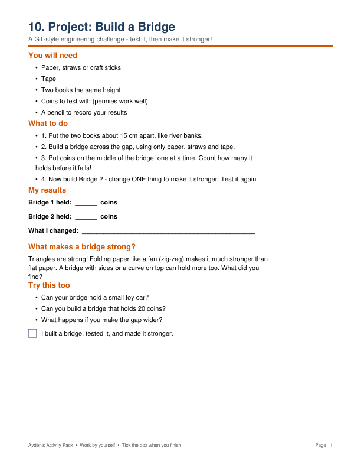
Show the text of this page
10. Project: Build a Bridge A GT-style engineering challenge - test it, then make it stronger! You will need • Paper, straws or craft sticks • Tape • Two books the same height • Coins to test with (pennies work well) • A pencil to record your results What to do • 1. Put the two books about 15 cm apart, like river banks. • 2. Build a bridge across the gap, using only paper, straws and tape. • 3. Put coins on the middle of the bridge, one at a time. Count how many it holds before it falls! • 4. Now build Bridge 2 - change ONE thing to make it stronger. Test it again. My results Bridge 1 held: ______ coins Bridge 2 held: ______ coins What I changed: ________________________________________________ What makes a bridge strong? Triangles are strong! Folding paper like a fan (zig-zag) makes it much stronger than flat paper. A bridge with sides or a curve on top can hold more too. What did you find? Try this too • Can your bridge hold a small toy car? • Can you build a bridge that holds 20 coins? • What happens if you make the gap wider? I built a bridge, tested it, and made it stronger. Ayden's Activity Pack • Work by yourself • Tick the box when you finish! Page 11
11. Rubik's Cube Challenges
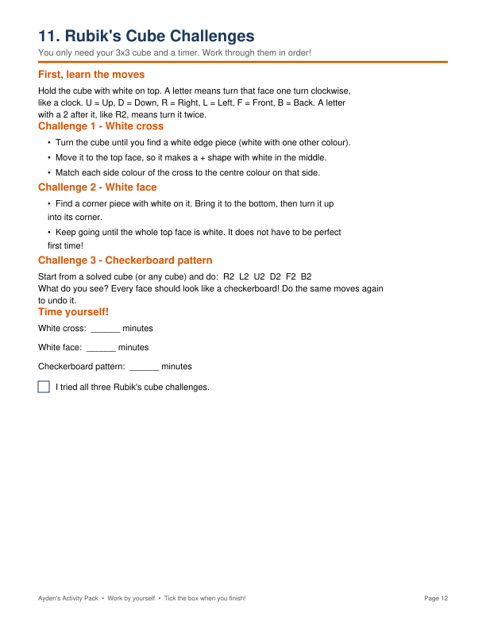
Show the text of this page
11. Rubik's Cube Challenges You only need your 3x3 cube and a timer. Work through them in order! First, learn the moves Hold the cube with white on top. A letter means turn that face one turn clockwise, like a clock. U = Up, D = Down, R = Right, L = Left, F = Front, B = Back. A letter with a 2 after it, like R2, means turn it twice. Challenge 1 - White cross • Turn the cube until you find a white edge piece (white with one other colour). • Move it to the top face, so it makes a + shape with white in the middle. • Match each side colour of the cross to the centre colour on that side. Challenge 2 - White face • Find a corner piece with white on it. Bring it to the bottom, then turn it up into its corner. • Keep going until the whole top face is white. It does not have to be perfect first time! Challenge 3 - Checkerboard pattern Start from a solved cube (or any cube) and do: R2 L2 U2 D2 F2 B2 What do you see? Every face should look like a checkerboard! Do the same moves again to undo it. Time yourself! White cross: ______ minutes White face: ______ minutes Checkerboard pattern: ______ minutes I tried all three Rubik's cube challenges. Ayden's Activity Pack • Work by yourself • Tick the box when you finish! Page 12
12. Social Studies - Community Fun
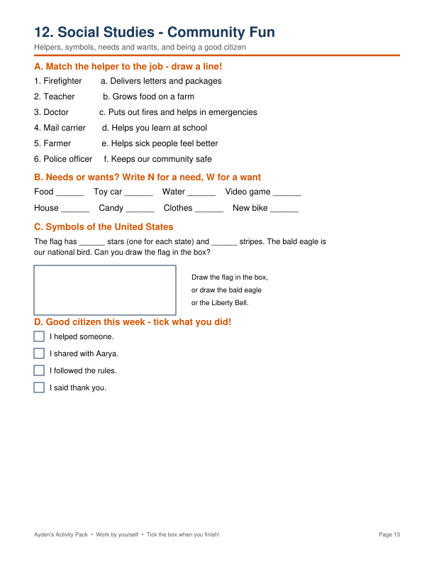
Show the text of this page
12. Social Studies - Community Fun Helpers, symbols, needs and wants, and being a good citizen A. Match the helper to the job - draw a line! 1. Firefighter a. Delivers letters and packages 2. Teacher b. Grows food on a farm 3. Doctor c. Puts out fires and helps in emergencies 4. Mail carrier d. Helps you learn at school 5. Farmer e. Helps sick people feel better 6. Police officer f. Keeps our community safe B. Needs or wants? Write N for a need, W for a want Food ______ Toy car ______ Water ______ Video game ______ House ______ Candy ______ Clothes ______ New bike ______ C. Symbols of the United States The flag has ______ stars (one for each state) and ______ stripes. The bald eagle is our national bird. Can you draw the flag in the box? Draw the flag in the box, or draw the bald eagle or the Liberty Bell. D. Good citizen this week - tick what you did! I helped someone. I shared with Aarya. I followed the rules. I said thank you. Ayden's Activity Pack • Work by yourself • Tick the box when you finish! Page 13
13. Geography - Map Adventure
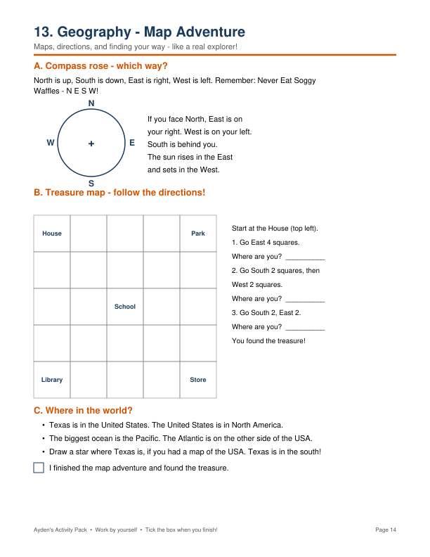
Show the text of this page
13. Geography - Map Adventure Maps, directions, and finding your way - like a real explorer! A. Compass rose - which way? North is up, South is down, East is right, West is left. Remember: Never Eat Soggy Waffles - N E S W! N If you face North, East is on your right. West is on your left. W + E South is behind you. The sun rises in the East and sets in the West. S B. Treasure map - follow the directions! House Park Start at the House (top left). 1. Go East 4 squares. Where are you? __________ 2. Go South 2 squares, then West 2 squares. Where are you? __________ School 3. Go South 2, East 2. Where are you? __________ You found the treasure! Library Store C. Where in the world? • Texas is in the United States. The United States is in North America. • The biggest ocean is the Pacific. The Atlantic is on the other side of the USA. • Draw a star where Texas is, if you had a map of the USA. Texas is in the south! I finished the map adventure and found the treasure. Ayden's Activity Pack • Work by yourself • Tick the box when you finish! Page 14
14. Art - Colour, Draw and Create
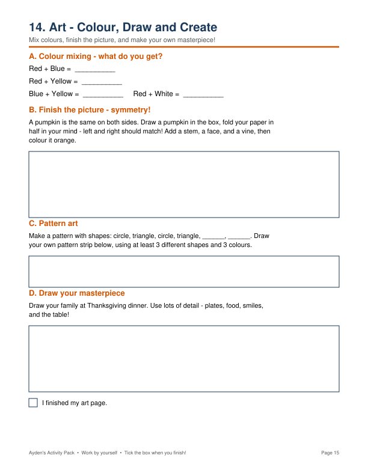
Show the text of this page
14. Art - Colour, Draw and Create Mix colours, finish the picture, and make your own masterpiece! A. Colour mixing - what do you get? Red + Blue = __________ Red + Yellow = __________ Blue + Yellow = __________ Red + White = __________ B. Finish the picture - symmetry! A pumpkin is the same on both sides. Draw a pumpkin in the box, fold your paper in half in your mind - left and right should match! Add a stem, a face, and a vine, then colour it orange. C. Pattern art Make a pattern with shapes: circle, triangle, circle, triangle, ______, ______. Draw your own pattern strip below, using at least 3 different shapes and 3 colours. D. Draw your masterpiece Draw your family at Thanksgiving dinner. Use lots of detail - plates, food, smiles, and the table! I finished my art page. Ayden's Activity Pack • Work by yourself • Tick the box when you finish! Page 15
15. Exercise Routine - Karate Moves
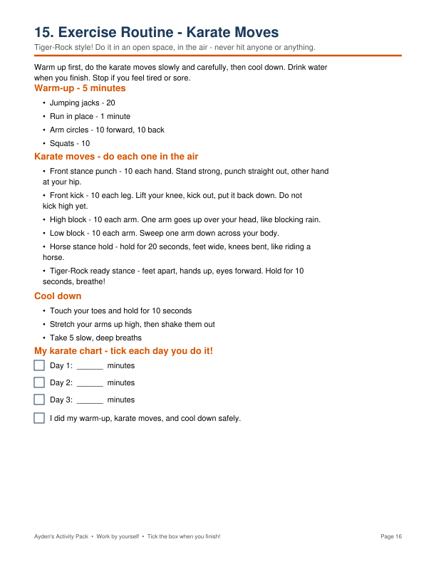
Show the text of this page
15. Exercise Routine - Karate Moves Tiger-Rock style! Do it in an open space, in the air - never hit anyone or anything. Warm up first, do the karate moves slowly and carefully, then cool down. Drink water when you finish. Stop if you feel tired or sore. Warm-up - 5 minutes • Jumping jacks - 20 • Run in place - 1 minute • Arm circles - 10 forward, 10 back • Squats - 10 Karate moves - do each one in the air • Front stance punch - 10 each hand. Stand strong, punch straight out, other hand at your hip. • Front kick - 10 each leg. Lift your knee, kick out, put it back down. Do not kick high yet. • High block - 10 each arm. One arm goes up over your head, like blocking rain. • Low block - 10 each arm. Sweep one arm down across your body. • Horse stance hold - hold for 20 seconds, feet wide, knees bent, like riding a horse. • Tiger-Rock ready stance - feet apart, hands up, eyes forward. Hold for 10 seconds, breathe! Cool down • Touch your toes and hold for 10 seconds • Stretch your arms up high, then shake them out • Take 5 slow, deep breaths My karate chart - tick each day you do it! Day 1: ______ minutes Day 2: ______ minutes Day 3: ______ minutes I did my warm-up, karate moves, and cool down safely. Ayden's Activity Pack • Work by yourself • Tick the box when you finish! Page 16
16. Minecraft & Nintendo Games
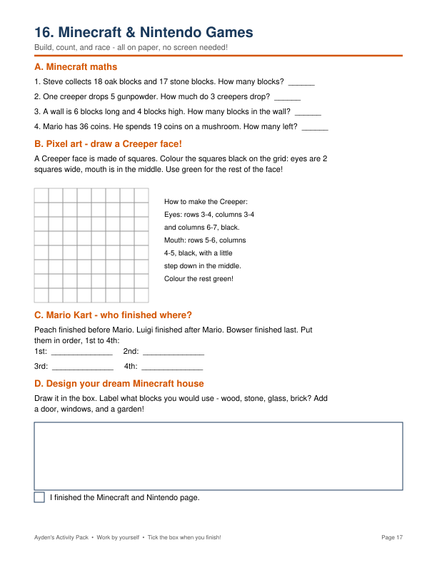
Show the text of this page
16. Minecraft & Nintendo Games Build, count, and race - all on paper, no screen needed! A. Minecraft maths 1. Steve collects 18 oak blocks and 17 stone blocks. How many blocks? ______ 2. One creeper drops 5 gunpowder. How much do 3 creepers drop? ______ 3. A wall is 6 blocks long and 4 blocks high. How many blocks in the wall? ______ 4. Mario has 36 coins. He spends 19 coins on a mushroom. How many left? ______ B. Pixel art - draw a Creeper face! A Creeper face is made of squares. Colour the squares black on the grid: eyes are 2 squares wide, mouth is in the middle. Use green for the rest of the face! How to make the Creeper: Eyes: rows 3-4, columns 3-4 and columns 6-7, black. Mouth: rows 5-6, columns 4-5, black, with a little step down in the middle. Colour the rest green! C. Mario Kart - who finished where? Peach finished before Mario. Luigi finished after Mario. Bowser finished last. Put them in order, 1st to 4th: 1st: ______________ 2nd: ______________ 3rd: ______________ 4th: ______________ D. Design your dream Minecraft house Draw it in the box. Label what blocks you would use - wood, stone, glass, brick? Add a door, windows, and a garden! I finished the Minecraft and Nintendo page. Ayden's Activity Pack • Work by yourself • Tick the box when you finish! Page 17
17. Reading Passage with Questions
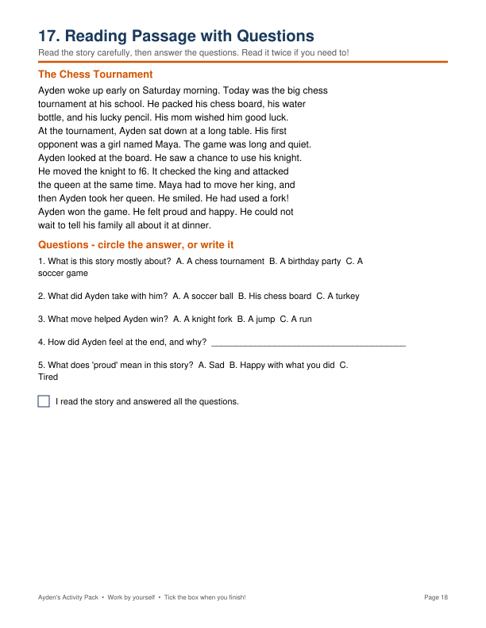
Show the text of this page
17. Reading Passage with Questions Read the story carefully, then answer the questions. Read it twice if you need to! The Chess Tournament Ayden woke up early on Saturday morning. Today was the big chess tournament at his school. He packed his chess board, his water bottle, and his lucky pencil. His mom wished him good luck. At the tournament, Ayden sat down at a long table. His first opponent was a girl named Maya. The game was long and quiet. Ayden looked at the board. He saw a chance to use his knight. He moved the knight to f6. It checked the king and attacked the queen at the same time. Maya had to move her king, and then Ayden took her queen. He smiled. He had used a fork! Ayden won the game. He felt proud and happy. He could not wait to tell his family all about it at dinner. Questions - circle the answer, or write it 1. What is this story mostly about? A. A chess tournament B. A birthday party C. A soccer game 2. What did Ayden take with him? A. A soccer ball B. His chess board C. A turkey 3. What move helped Ayden win? A. A knight fork B. A jump C. A run 4. How did Ayden feel at the end, and why? ________________________________________ 5. What does 'proud' mean in this story? A. Sad B. Happy with what you did C. Tired I read the story and answered all the questions. Ayden's Activity Pack • Work by yourself • Tick the box when you finish! Page 18
18. My Name - Ayden Pandeya
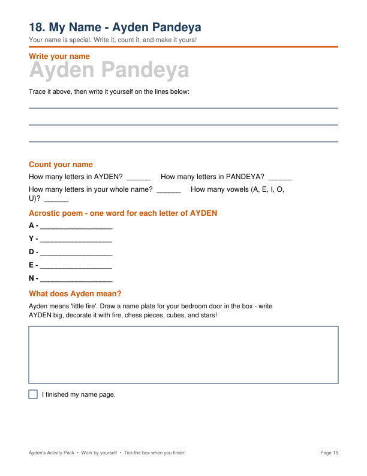
Show the text of this page
18. My Name - Ayden Pandeya Your name is special. Write it, count it, and make it yours! Write your name Ayden Pandeya Trace it above, then write it yourself on the lines below: Count your name How many letters in AYDEN? ______ How many letters in PANDEYA? ______ How many letters in your whole name? ______ U)? ______ How many vowels (A, E, I, O, Acrostic poem - one word for each letter of AYDEN A - __________________ Y - __________________ D - __________________ E - __________________ N - __________________ What does Ayden mean? Ayden means 'little fire'. Draw a name plate for your bedroom door in the box - write AYDEN big, decorate it with fire, chess pieces, cubes, and stars! I finished my name page. Ayden's Activity Pack • Work by yourself • Tick the box when you finish! Page 19
🔒 For Mom - answer key (Ayden: finish first, no peeking!)
Answers - For Mom to check!
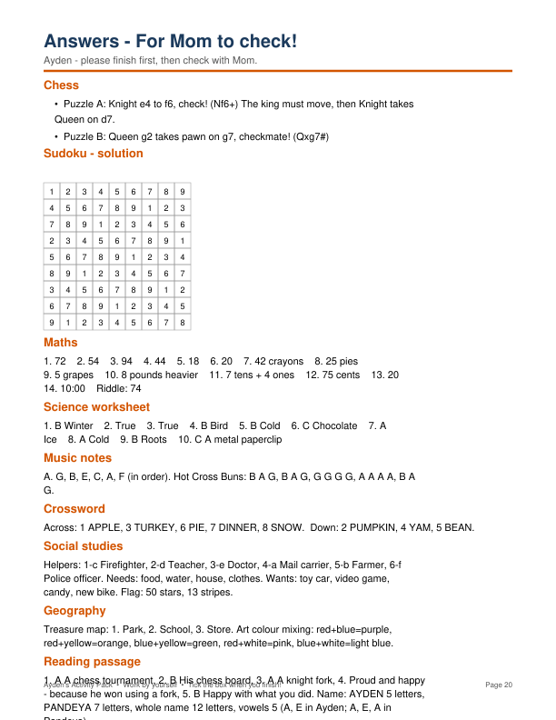
Show the text of this page
Answers - For Mom to check! Ayden - please finish first, then check with Mom. Chess • Puzzle A: Knight e4 to f6, check! (Nf6+) The king must move, then Knight takes Queen on d7. • Puzzle B: Queen g2 takes pawn on g7, checkmate! (Qxg7#) Sudoku - solution 1 2 3 4 5 6 7 8 9 4 5 6 7 8 9 1 2 3 7 8 9 1 2 3 4 5 6 2 3 4 5 6 7 8 9 1 5 6 7 8 9 1 2 3 4 8 9 1 2 3 4 5 6 7 3 4 5 6 7 8 9 1 2 6 7 8 9 1 2 3 4 5 9 1 2 3 4 5 6 7 8 Maths 1. 72 2. 54 3. 94 4. 44 5. 18 6. 20 7. 42 crayons 8. 25 pies 9. 5 grapes 10. 8 pounds heavier 11. 7 tens + 4 ones 12. 75 cents 14. 10:00 Riddle: 74 13. 20 Science worksheet 1. B Winter 2. True 3. True 4. B Bird 5. B Cold 6. C Chocolate Ice 8. A Cold 9. B Roots 10. C A metal paperclip 7. A Music notes A. G, B, E, C, A, F (in order). Hot Cross Buns: B A G, B A G, G G G G, A A A A, B A G. Crossword Across: 1 APPLE, 3 TURKEY, 6 PIE, 7 DINNER, 8 SNOW. Down: 2 PUMPKIN, 4 YAM, 5 BEAN. Social studies Helpers: 1-c Firefighter, 2-d Teacher, 3-e Doctor, 4-a Mail carrier, 5-b Farmer, 6-f Police officer. Needs: food, water, house, clothes. Wants: toy car, video game, candy, new bike. Flag: 50 stars, 13 stripes. Geography Treasure map: 1. Park, 2. School, 3. Store. Art colour mixing: red+blue=purple, red+yellow=orange, blue+yellow=green, red+white=pink, blue+white=light blue. Reading passage 1. A A Activity chessPack tournament, 2. B His chess 3.finish! A A knight fork, 4. Proud and happy Ayden's • Work by yourself • Tick the boxboard, when you - because he won using a fork, 5. B Happy with what you did. Name: AYDEN 5 letters, PANDEYA 7 letters, whole name 12 letters, vowels 5 (A, E in Ayden; A, E, A in Page 20